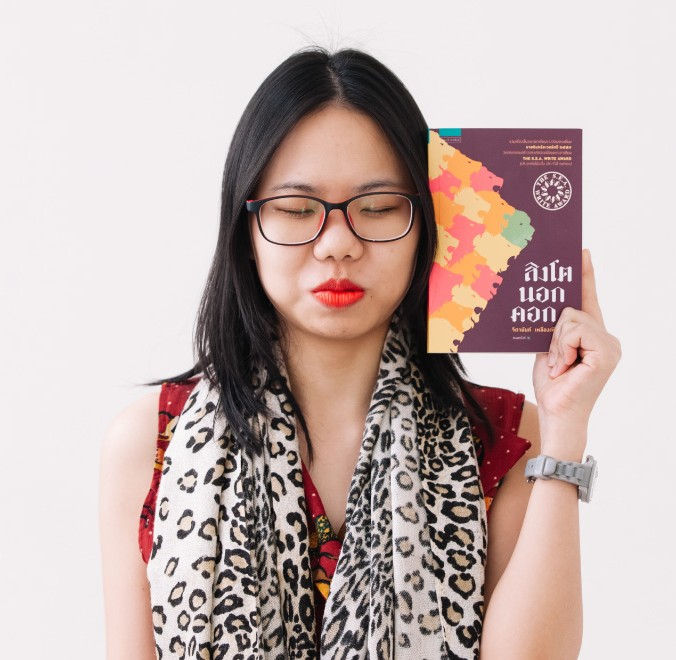

“เมื่อนั้นเหล่ากวีจึงตื่น” หนังสือรวมบทกวี 50 บทของ “ จิดานันท์ เหลืองเพียรสมุท ” เจ้าของผลงานหนังสือรวมเรื่องสั้น “สิงโตนอกคอก” ( รางวัลซีไรต์ ปี พ.ศ. 2560 ) ครั้งนี้เธอเปลี่ยนแนวงานเขียนจากประเภทเรื่องสั้นและนิยาย มาเป็น บทกวีร่วมสมัย ที่โดดเด่นทั้งด้านการสรรคำ การเร้าอารมณ์ และการนำเสนอแนวคิดให้ผู้อ่าน “รู้สึก” ถึงความเป็นจริงของชีวิต ทั้งความทุกข์ ความสุข ความรัก และความหวัง

จิดานันท์ เหลืองเพียรสมุท
“ร เรือในมหาสมุท”
กวีให้อะไรกับคนอ่าน ?
บทกวีสามารถถ่ายทอดอารมณ์ได้อย่างลึกซึ้ง ไม่ว่าจะเป็นความรัก ความสุข ความเศร้า ความเหงา ความคิดถึง ความผิดหวัง หรือความหวัง บางครั้งความรู้สึกบางอย่างเป็นสิ่งที่เราไม่สามารถอธิบายออกมาเป็นคำพูดได้ แต่บทกวีกลับสามารถใช้ถ้อยคำเพียงไม่กี่บรรทัดทำให้ผู้อ่านรู้สึกว่า “มีใครบางคนเข้าใจความรู้สึกของเรา”
หนังสือเล่มนี้ได้รวบรวมบทกวีทั้งหลายไว้ในเล่มเดียวกัน บทกวีจึงเป็นเหมือนการได้พบกับความรู้สึกของตัวเองผ่านเสียงของผู้อื่น และในบางครั้งก็ช่วยปลอบโยนผู้อ่านโดยไม่จำเป็นต้องให้คำแนะนำ
ถ่ายทอดความรู้สึกผ่านออกมาจากตัวหนังสือในกวี มองเห็นสิ่งที่กำลังเผชิญอยู่ หรือ เรื่องราวปัญหาต่าง ๆ ถ้อยคำ ความหมาย สัมผัส จังหวะ อย่างเป็นศิลปะตัวอักษร
ผู้อ่านอาจถูกเติมเต็มด้วยความงามทางภาษา รวมถึงความคิดที่ผู้เขียนต้องการถ่ายทอดออกมา โดยให้ผู้อ่านตีความสิ่งนั้น ๆ เอง ตามประสบการณ์และรสชาติชีวิตที่พบเจอ
หนังสือเล่มนี้เปลี่ยนอะไรในตัวเราได้บ้าง?

ความรู้สึกภายใจใจตัวเอง
บทกวีทำหน้าที่คล้ายกระจกที่สะท้อนความรู้สึกภายในของมนุษย์ เราได้ทบทวนตัวเองว่า เรากำลังรู้สึกอะไร ต้องการอะไร กำลังกลัวอะไร หรือสิ่งใดที่มีความหมายต่อชีวิตของเรา

พื้นที่สำหรับการหยุดคิด
กวีทำให้เราได้หยุดและใช้เวลากับความคิด บทกวีบางบทอาจใช้เวลาอ่านเพียงไม่กี่นาที แต่สามารถทำให้ผู้อ่านคิดต่อไปได้อีกนาน

เห็นคุณค่าของภาษา
ภาษามีความสามารถมากกว่าการใช้สื่อสารข้อมูล เพราะภาษาในบทกวีสามารถสร้างภาพ สร้างอารมณ์ และสร้างจินตนาการได้

เปิดมุมมองใหม่ของชีวิต
กวีมักนำเรื่องราวธรรมดาในชีวิตมานำเสนอจากมุมมองที่แตกต่างออกไป สิ่งที่เราเคยมองว่าเป็นเรื่องธรรมดา อาจมีความหมายมากกว่าที่คิด
A:
การรับน้องนั้น มีขึ้นเพื่อกระชับความสัมพันธ์กับเพื่อนใหม่ที่กำลังจะเข้ามาเรียน
ในคณะ หรือสาขาวิชาเอก-โทนี้ด้วยกัน แต่ไม่มีการบังคับให้เข้าร่วมกิจกรรมนี้นะครับ
ดังนั้นไม่ต้องเข้าก็ได้ เพราะไม่มีผลอะไรกับการใช้ชีวิตในสาขาวิชานี้แน่นอน
A:
ที่นี่ไม่มีโซตัสทั้งรับน้องของคณะ และรับน้องของเอก-โท
ดังนั้นไม่ต้องกังวลนะคะ
A:
จริง ๆ ทางภาควิชาไม่ได้บังคับ แต่ "ขอความร่วมมือ"
ดังนั้นเข้าร่วมเพื่อกิจกรรมเอาไว้ใส่ในแฟ้มรวบรวมผลงาน
เพื่อสั่งสมประสบการณ์ก็ดีครับ
A:
ถ้าเป็นเด็ก "เอก" นี้ จะต้องฝึกงานนะคะ
เพราะต้องนำประสบการณ์ที่ได้จากการฝึกงานไปเรียนต่อในรายวิชา
"สัมมนาการฝึกปฏิบัติงาน" เป็นวิชาบังคับ
ซึ่งจะต้องนับเป็นหน่วยกิตก่อนจบการศึกษาด้วย
แต่ถ้าเป็นเด็ก "โท" ไม่จำเป็นต้องฝึกงานค่ะ